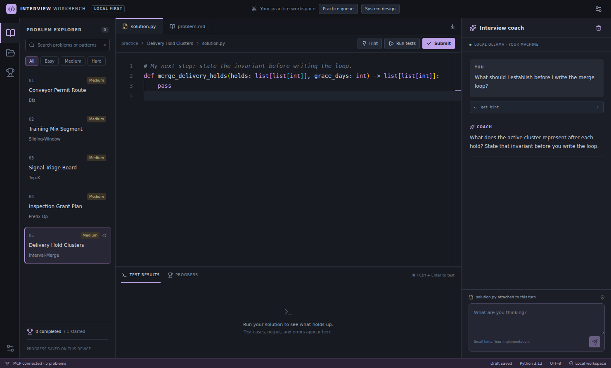

Windows x64
Extract the ZIP file and open the setup program. Windows may show an unknown publisher because the installer is unsigned.
Download for WindowsWork through interview problems in a code editor, sketch designs on a whiteboard, and return to your saved drafts. Practice locally without an account.

Extract the ZIP file and open the setup program. Windows may show an unknown publisher because the installer is unsigned.
Download for WindowsOn Debian or Ubuntu, open the Debian package with your software installer. Start Interview Workbench from the applications menu.
Download for LinuxmacOS has no package in this preview. Running code tests requires Docker and the local sandbox.
Coding practice shows a draft and a hint from a scripted coach.
System design practice shows a whiteboard and a saved checkpoint with AI off.